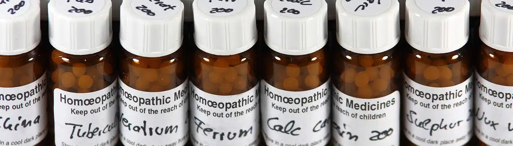

For over 200 years, Homeopathy has evolved as a form of medicine based on empiricism. Although it was crystallised by Dr. Samuel Hahnemann in 1796, its principles stretch back to the thinking of Hippocrates and Paracelsus.
Its main principle “Like cures like” is based on the principle that there is a direct relationship between the symptoms that you experience and the homeopathic medicine (remedy) prescribed.
There are over 2000 Homeopathic remedies and each one is unique, just like the way you experience your symptoms and the way you are as an individual. In a course of homeopathic treatment, a remedy that is most similar to you and your symptoms will be chosen based on the information given during the consultation in order to stimulate your innate healing ability in the best way possible.
To find out more click here...
The consultation consists of simply talking with the homeopath in order to obtain all the information necessary for choosing the right remedy for you. This will include your past and current medical history as well as your general well being. After the consultation, you will receive a homeopathic remedy in the form most suitable to you (tablets or liquid). Then you will be asked to return for a follow up assessment after 4 to 6 weeks. However, if necessary, telephone consultation and support is available in between the appointments (Phone in times).
Information will be treated in the strictest confidence in accordance with the code of ethics established by The Society of Homeopaths.
Languages: the consultation can be done in English or Japanese

Homeopathic medicines are frequently called “remedy” and there are over 2000 remedies available, where each one is unique.
They are made from wide range of substances such as plants, minerals and animals*.
In the process of remedy making, an alcoholic tincture of the substance (called mother tincture) undergoes a high level of dilution and at the same time, it undergoes a process called succusion. Succusion is a process, where the solution is shaken vigorously to release energetic principle of the substance. Hence it is most important process in remedy making.
High dilution also means that homeopathic remedies are not toxic and is very safe form of medicine with no side effects. Hence it can be used by; babies, children, pregnant women, elderly as well as animals**
*This does not mean that an animal has to be killed for every animal remedy made.
** Please note that only veterinary surgeons trained in homeopathy are allowed to treat animals homeopathically.
Homeopathy is suitable for many conditions including:
• Skin conditions
• Allergies
• Hay fever
• Respiratory problems
• Recurring problems
• Menstrual/Hormonal problems
• Structural, muscular problems
• Mental/Emotional related problems
• Behavioural difficulties including of Children.
• Children’s ailments
• Complaints during pregnancy
• Preparation/Difficulties in conception, pregnancy or child-birth
As homeopathic treatments use a safe form of medicine and it has no side effects, it is suitable during pregnancy as well as for breast-feeding mothers and babies/children.
Homeopathic remedies can work alongside with conventional medicine therefore treatment is possible even if you are under a course of treatment prescribed by your GP or a specialist. However it is advisable that you inform your GP or a specialist that you are seeing a homeopath.
It is not advisable to stop any medication or course of treatment that you are being prescribed by GP without his/her consent.
Children and babies respond very well to homeopathy, and many chronic, untreatable or unexplainable conditions can be helped with often a lasting result. It is very safe with no side effects as well as its lasting result makes many parents turn to homeopathy. Thus avoiding the repetitive use of antibiotics and steroids. Homeopathy helps to improve the child’s general well being as well as helping his/her growth. It is very effective in helping emotional and behavioural difficulties as it works on all sphere of the person. We take into account the family medical history, the child’s personal history, including current symptoms as well as his/her personalities and characteristic, hence it is essential that the child in concern come to the consultation also. Please note that there is a home visit service for families who would find it difficult to come to the clinic. Please contact for further information.
The first consultation will last up to 1h 30m and up to 1h for the follow up consultations, although it varies depending on the individuals.
First consultation: £105
Follow up consultations: £75
The cost includes the remedy and the support (either by telephone or by email) in between the consultations; as well as additional remedies in between if necessary.
*Concessions are available please contact Tomomi directly for eligibility
Cancellation within 24h will be charged